meshlet-optimizer — Nested Chart Hierarchies for Meshlet LOD
Crack-free meshlet level-of-detail DAGs in which every meshlet is a chart, every coarser chart is remeshed inside the borders of the charts it replaces, and texture coordinates survive every level.
Abstract
Cluster-based level of detail renders a mesh as a cut through a directed acyclic graph of small triangle clusters (meshlets), swapping groups of fine clusters for coarser ones as they shrink on screen. The usual construction simplifies each group with its outer border locked, which keeps neighbouring clusters crack-free but leaves the border at full resolution on every level and produces clusters whose shape follows whatever the simplifier left. meshlet-optimizer builds the DAG the other way around: it first segments the surface into compact, disk-shaped charts with a restricted centroidal Voronoi tessellation, then merges cliques of adjacent charts level by level into a region hierarchy. Each new region is flattened with least-squares conformal maps and remeshed in the plane with blue noise, a restricted 2D CVT and a constrained Delaunay triangulation, while its border is coarsened by edge collapses whose removed vertices are snapped onto the coarser border on every finer level. Borders are therefore nested: every border of every level lies on the borders of the levels below it, so any mix of levels drawn side by side is crack-free, and borders get coarser along with the interiors. Every region becomes exactly one meshlet, groups are the regions that merge into one parent, and the result is written as a .mlod file that meshlet-viewer renders with mesh shaders. Texture seams are kept as region borders, so UVs are carried through every level; a mesh without UVs instead gets one packed atlas per level. On a 600K-triangle scanned figure the texture sampled at level 4 lies within 1.9 mean edge lengths of the right surface point for 99% of triangles.
1Introduction
Mesh-shader pipelines draw geometry as meshlets: clusters of up to a few hundred triangles, each culled and rasterized by one workgroup. Level of detail fits naturally on top of them. Nanite [1] and meshoptimizer's clusterlod [2] partition the clusters of one level into groups, simplify each group as a whole with its outer border locked, and split the result into new, coarser clusters. Because the locked border is shared with the neighbouring groups, any group can be swapped for its simplified version without opening a crack, and a renderer picks, per group, the coarsest version whose projected error is below a pixel threshold.
Locking borders has two costs. Border edges are never simplified within a level, so they accumulate until the next level re-partitions the groups and frees them, and the clusters that come out of a simplifier have whatever shape the collapses left: long, ragged, or with many more triangles than the interior needs. This project explores a construction in which the cluster shape comes first. The surface is segmented into compact charts, charts are merged into a hierarchy of regions, and each region of each level is one meshlet. A coarser region is not obtained by simplifying its children but by remeshing them: the region is flattened, sampled with fewer, evenly spread points, triangulated and lifted back onto the surface. Its border is simplified too, but in a way that keeps it on the borders of every finer level, which is what makes levels interchangeable.
The contributions are:
- a nesting invariant on region borders across levels (§3.2) that makes every pair of levels crack-free while letting borders coarsen with the interiors, maintained by snapping removed border vertices of every finer level onto the coarser border (§3.9);
- a chart pipeline for building the levels: restricted-CVT base charts with topological clean-up (§3.3), clique merging that keeps groups disk-shaped (§3.5), one global LSCM solve per level with padded charts (§3.6) and planar remeshing with a 3D fallback for folded regions (§3.7);
- a multi-level border relaxation that moves a border vertex and all its copies on every level as one variable, minimizing a CVT energy summed over the levels (§3.10);
- texture-aware construction: UV seams are region borders, so texture coordinates are interpolated, never invented, and untextured meshes get a per-level packed atlas (§3.11);
- an exact mapping of the hierarchy onto meshoptimizer's cluster DAG and LOD selection BVH, so the output runs in an existing mesh-shader viewer (§3.13).
The program is a command-line tool, meshlet-optimizer model.ply -o model.mlod, built from the mapping pipeline of an earlier toolbox and stripped to what the hierarchy and export need. Section 2 reviews the building blocks, Section 3 describes the method stage by stage, Section 4 measures it on two models, and the appendices document the parameters, the file format and how to reproduce every figure.
2Background
2.1Meshlets and cluster LOD
A meshlet stores up to V vertex references and T triangles with 8-bit local indices; meshlet-viewer's mesh shader accepts V = T = 256. A cluster LOD hierarchy is a DAG whose nodes are meshlets. Meshlets are organised in groups: a group of depth k is a set of clusters that is replaced, as a unit, by the clusters of its simplified version at depth k+1. Every cluster carries two error bounds: its own error eself (how far its geometry is from the original surface, with a bounding sphere) and the error ecoarse of the group that would replace it. The renderer draws a cluster exactly when
project(eself) ≤ τ < project(ecoarse)
for a screen-space threshold τ. If errors grow monotonically up the DAG, exactly one version of each part of the surface passes the test, so the selection is a consistent cut. Selection is accelerated with a BVH over the groups, one tree per depth, culled on the GPU; meshlet-viewer uses meshoptimizer's clodBuildHierarchy for it. The cut is crack-free only if every pair of clusters that can be drawn side by side meets along a common border.
2.2Centroidal Voronoi tessellations
Given sites x1, …, xn on a surface S, the restricted Voronoi diagram intersects each 3D Voronoi cell with the surface. A centroidal Voronoi tessellation (CVT) minimizes
F(X) = Σi ∫Ωi ∩ S ‖y − xi‖² dy, ∇xiF = 2 mi (xi − ci)
where mi and ci are the mass and centroid of cell i. Lloyd's algorithm [5] moves each site to its centroid; Liu et al. [6] showed that quasi-Newton (L-BFGS) minimization of F converges much faster. CVT cells are compact and evenly sized, which makes them good charts and good remeshing samples alike. Yan et al. [4] compute the restricted diagram exactly by clipping each triangle against the bisectors of nearby sites.
2.3Conformal flattening
Least-squares conformal maps (LSCM) [3] flatten a disk-shaped chart by asking every triangle to be mapped by a similarity: in complex notation the Cauchy–Riemann equations ∂u/∂x = ∂v/∂y, ∂u/∂y = −∂v/∂x per triangle, weighted by area, solved in the least-squares sense with two or more vertices pinned. The system is a sparse linear least-squares problem, so all charts of a level can be solved at once. LSCM preserves angles well but can fold a chart with a strongly curved or ragged boundary, which the remeshing stage has to detect.
2.4Related work
Chart-based multiresolution has a long history in texture mapping: Sander et al. [8] build charts by greedy merging and parametrize a progressive mesh so that every level shares one atlas, which requires chart borders to survive simplification, a constraint close to our nesting invariant. Variational shape approximation and CVT remeshing [4] [6] produce compact clusters but no hierarchy. Cluster LOD as used in production [1] [2] gets crack-freedom from locked group borders and rebuilds the partition at every level. Our construction sits between the two: a single region hierarchy fixes the partition for all levels, as in chart-based multiresolution, and the remeshed regions become the clusters of a standard cluster-LOD DAG.
3Method
3.1Overview
All stages live in one class, MeshletBuilder, and run in the order of Figure 1. The base charts become level 0. Each pass of the level loop clusters the top level's regions into groups, cuts the previous level's surface along the groups, flattens and remeshes every group into one region of the new level, splits regions that came out too large and coarsens the new level's borders. When the loop stops, flat triangles left by snapping are repaired, border vertices are relaxed on all levels at once, atlases are built when the input had no UVs, and everything is written as one .mlod.
MeshletBuilder::build. The command line reports each top box with its duration; the level loop is reported once per level.function Build(M)
L0 ← BaseLevel(RestrictedCvtCharts(M)) // regions = charts, faces of M
while |regions(Lk)| > stop and Lk coarser than Lk−1
G ← CliqueGroups(regions(Lk)) // disk-shaped, never across UV islands
for each group g ∈ G in parallel
uv ← Lscm(faces of Lk in g, padded) // one sparse solve for all groups
P ← BlueNoise(uv, 0.35 · interior(g)) ; Lloyd2D(P)
T ← ConstrainedDelaunay(border(g) ∪ P) // border vertices kept exactly
region(g) ← Project(Lift(T, uv), M)
Lk+1 ← Weld(regions) ; SplitLarge(Lk+1)
SimplifyBorders(Lk+1, snap copies on L0 … Lk)
FixFlatTriangles(L*) ; RelaxBorders(L*) ; UvAtlases(L*)
return MeshletDag(L*)3.2The nesting invariant
Let Bk be the union of region-border edges of level k, and let level k+1's regions be unions of level k's regions (through the hierarchy). The builder maintains, for every i < k:
Nesting. (a) Every vertex of Bi that lies on an edge between two different level-k units lies on Bk; (b) every vertex of Bk lying on such a border of level i is also a vertex of Bi, at exactly the same position.
(b) says coarse borders introduce no new vertices, so a coarse region never has a vertex in the middle of a fine neighbour's edge (no T-junction from the coarse side). (a) says fine border vertices that the coarse border dropped still lie on the coarse border's edges. When the renderer draws a level-k region next to level-i regions, the shared boundary consists of the same polyline, possibly with extra collinear vertices on the fine side, so there is no gap. The invariant is established for free when borders are never simplified (the borders of a level are then subsets of mesh edges of every level below), and maintained under simplification by moving every dropped vertex's copies on finer levels onto the new coarse edge (§3.9). --check-cracks verifies it for every pair of levels before writing (LevelCracks, tolerance 10−4 of the mean border edge length).
3.3Base charts
The base charts are the leaves of the hierarchy and the meshlets of level 0, so they should be compact, roughly equal in size, disk-shaped and below the meshlet ceiling. CvtSegmentation computes them as a restricted CVT:
- Seeds. The seed count is n = ⌈|F| / (f · Tmax)⌉ with Tmax =
--chart-triangles(256) and f =--chart-fill(0.375): charts aim at well under the limit, since triangles on chart borders count toward both sides and an explicit cap handles the rest. Seeds are dart-thrown as Poisson-disk blue noise on the surface with radius 0.8 times the hexagonal-packing spacing of n points, on a spatial hash grid. - Exact restricted Voronoi cells. Each triangle is clipped against the bisector planes of the seeds whose cells reach it, starting at the seed nearest its centroid and propagating across clipped edges; a security radius (twice the cell radius) ends clipping without a Delaunay triangulation [4]. Triangles are processed in fixed chunks whose contributions are summed in chunk order, so the result does not depend on the thread count.
- Optimization. Four Lloyd iterations, then up to 40 L-BFGS iterations on F with the analytic gradient of §2.2, in units of the seed spacing.
- Labels. Each vertex takes its nearest seed; fragments that are not the largest piece of their cell and charts under 16 vertices are absorbed by neighbours.
- Regularization (
LabelGraph): a morphological opening (erode two rings, regrow cores as a geodesic Voronoi diagram) removes thin tails and band charts; region competition moves boundary vertices to the neighbouring chart that lowers a compactness + normal + smoothness cost, only when the vertex is simple (its one-ring meets both charts in single arcs), so chart topology never changes; charts whose Euler characteristic V − E + F ≠ 1 are cut in two from their two farthest vertices until they are disks; finally charts touching more than Tmax triangles are cut the same way.
3.4Level 0 and seam straightening
The vertex labels become face regions: each face joins the chart holding most of its corners. From here on regions are sets of faces, so every border runs along mesh edges and level 0 adds no vertices. Faces with no edge neighbour in their own region join the smallest neighbouring region. With texture coordinates, regions are further split along UV seams into edge-connected pieces (§3.11).
CVT labels give jagged staircase borders on the mesh. StraightenRegionSeams breaks the borders into chains between junctions (vertices where three or more regions meet, or the mesh border) and replaces each chain by the cheapest edge path between its junctions through the two regions' faces. An edge costs its length, stretched by its distance from the bisector plane of the two regions' centroids (weight 2), so straightened seams stay where the Voronoi border would be instead of merely becoming short. A chain is replaced only when both regions keep their piece count and topology and no junction appears or disappears.
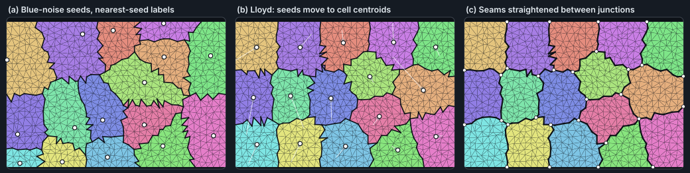
3.5Clustering regions
RegionHierarchy merges the top level's regions into groups. Grouping starts at a random node and spreads breadth-first: the node at the front of the queue seeds a group with the largest clique of ungrouped, mutually adjacent nodes it belongs to (4 if possible, then 3, 2, 1), preferring the lightest clique among equal sizes, and the group's ungrouped neighbours join the queue. A node left alone joins its smallest neighbouring group. Cliques keep groups round: four mutually adjacent charts meet around a common point instead of forming a chain.
LSCM needs disks, and a group of disks need not be one: it can ring a hole or pinch at a vertex. DiskGroups repairs such groups by closing (holes the group surrounds, up to half its size, are filled with the regions inside, which is always a union of whole groups) and then ejection (shedding members one at a time, the one whose removal leaves the most disk-like remainder, to a neighbouring group that stays a disk). Adjacency is restricted to regions in the same UV island, so no group crosses a texture seam.
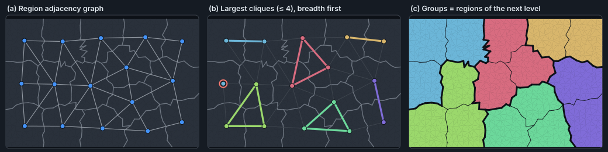
3.6Flattening
The previous level's surface is cut along the new groups, and every group becomes a mosaic: its faces with their own copy of the boundary vertices. LSCM distorts most at a free boundary, which is exactly where the region's border triangles are, so each mosaic is padded with one ring of its neighbours' triangles (--lscm-padding) that is dropped again after the solve. Each mosaic starts as a projection onto its best-fit plane, which also picks four pinned vertices (the extremes in u and v). All mosaics of the level are then solved in one sparse least-squares system: the normal equations are factored with a simplicial LDLT (Eigen), with conjugate gradients as a fallback if the factorization fails. Finally each mosaic's UV area is scaled to its 3D area, so sampling densities in the plane match the surface.
3.7Remeshing a region
RegionResampler remeshes every region independently (OpenMP over regions):
- Fold check. The region's UV layout is checked with winding numbers: every face must keep the region's orientation and every face centroid must have winding number ±1 with respect to the boundary loops. A folded region skips the planar path and is simplified in 3D by greedy edge collapses (cost: edge length times how far the surrounding faces turn), with a winding-number fold test, to the same vertex budget, boundary locked.
- Blue noise. The region keeps every boundary vertex exactly, in 2D and 3D. A fraction
--interior-fraction(0.35) of its interior vertex count is drawn as new points by dart throwing over its UV triangles, on a hash grid that already holds the boundary. - Restricted 2D CVT. Ten Lloyd iterations with exact Voronoi cells clipped to the region's UV triangles, boundary vertices acting as fixed generators.
- Constrained Delaunay triangulation of boundary and interior points with the boundary edges as constraints and holes removed (the CDT library). A region with B boundary and I interior vertices yields B + 2I − 2 triangles, so any interior fraction down to zero is valid.
- Lift and project. New points are lifted by barycentric interpolation in the old UV triangle that contains them (positions, normals and texture coordinates alike); a region where any lifted triangle faces against the surface under it is decimated instead. New interior vertices are then snapped to the closest point of the input surface (a BoxTree from kdtree-cpp), so levels do not drift away from the original as they compound.
- Weld. Regions are welded back into one mesh along their shared boundary vertices, which become the new level.
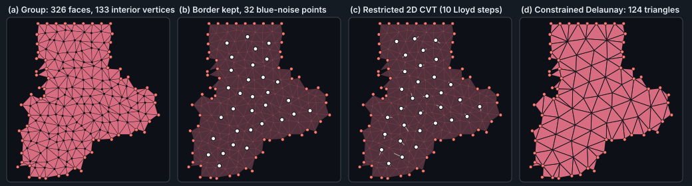
3.8Splitting large regions
Merging four regions and keeping 35% of their interior vertices does not always shrink the triangle count below the meshlet ceiling, especially when the border is long. Regions above --split-above-faces (256) triangles are split in two by two competing flood fills over face centroids, seeded at a region corner and the face farthest from it; the smaller half always claims the next face, so the halves are connected and balanced. A split cuts through the remeshed interior, not along child borders, so the two halves share their children and the hierarchy records them as one unit (splitFrom): they can only be swapped for their children together.
3.9Nested border simplification
Remeshing coarsens interiors, but a region keeps its children's border vertices, so without further work border edges would stay at level-0 resolution forever and dominate coarse meshlets. SimplifyRegionBorders coarsens each border chain of the level just built until its mean edge length reaches the mean interior edge length of its two regions (--border-target-scale). It repeatedly collapses a chain's shortest edge, moving the non-junction end onto the other end, which keeps its position. A collapse is refused if a remaining triangle would flip, turn more than 60° or vanish, if it breaks the link condition, or if it removes an ear (a face whose other two edges are borders too).
This is where the nesting invariant is maintained. Before each collapse, every vertex that the merged edge a–b would leave behind is still on the borders of all finer levels (collapses never move kept vertices, so its copies there are at the same position). Its copies are moved to their closest point on a–b and attached to that edge: when an end of the edge moves in a later, coarser collapse, they follow, recursively down the levels. If any of these moves would flip or over-rotate a triangle on any finer level, the collapse is refused. Afterwards every finer border lies on the coarser borders and every coarser border vertex is a finer border vertex, which is the invariant of §3.2. The next level is then cut from this simplified surface, so its own borders are made of the simplified ones.
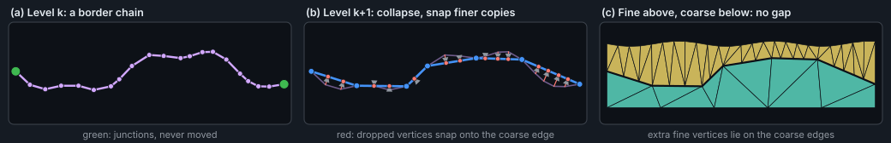
3.10Flat triangles and border relaxation
Snapping puts finer border vertices exactly on coarse edges, so three border vertices can become collinear with a degenerate triangle between them. After the loop, every triangle with an angle under 1° and one over 120° (a cap) has its long edge flipped with the triangle across it when that edge is inside a region and the result is better; otherwise a vertex is inserted in the pair (projected onto the surface) and the pair split into four. Region borders and existing vertices stay untouched, so the invariant holds.
Collapses leave border vertices where the shortest-edge order put them, so border edges are uneven. relaxBorders slides every border vertex along its border, like Lloyd's algorithm relaxes CVT sites, on all levels at once. A vertex and all its copies are one variable: its arclength along the border chain of the finest level it exists on, bounded by the midpoints to its neighbours there; vertices attached to a coarser edge slide along that edge between their neighbours on it and follow its ends; junctions are fixed. Interior vertices next to a border move too, in their tangent plane, by at most half their shortest edge. The energy is the CVT energy of every triangle touching a moving vertex, on every level:
E = Σlevels ℓ hℓ−4 Σtriangles t ∋ moving vertex Σcorners c ∫t λc(y) ‖y − pc‖² dy
where λc is the barycentric share of corner c and hℓ the level's mean border edge length, which makes every level count equally. E is minimized with L-BFGS-B (LBFGSpp, analytic gradient, 200 iterations) under the arclength bounds. Steps that would flip a triangle or turn it past 60° on any level are halved, then undone.
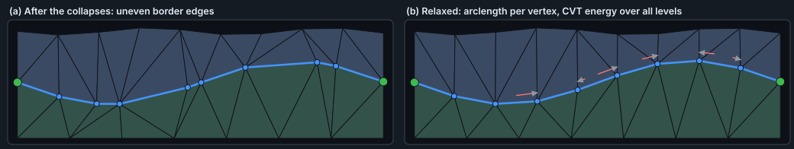
3.11Texture coordinates
Preserving input UVs. Texture coordinates are stored per face corner. UV islands are the connected components of faces across edges whose corner UVs match on both sides. Every region is kept inside one island: level 0's charts are split along seams, clustering only joins regions of the same island, and seam straightening and disk repair never move a seam. Inside a region UVs are continuous, so the remeshing stage interpolates them with the same barycentrics as positions, and every coarse vertex samples the texture where its own surface point was. Two details matter for correctness. A seam can end inside an island (a slit), so a region may still contain a vertex with two UVs: when a border vertex moves, its new UV is taken only from faces on the same side of such a seam, and the flat-triangle fix leaves pairs that meet along one alone. In the export, vertices are split per distinct (vertex, UV) pair.
Generating atlases. A mesh without UVs gets one atlas per level instead. Every region of the level is flattened with the same padded LSCM as §3.6 and scaled to its 3D area, then ChartBinPack packs the charts: each is rotated so that its minimum-area enclosing rectangle (tested over the directions of its convex hull edges) is axis-aligned; the rectangles, padded by --pack-padding times the mean chart side, are packed largest first with MaxRects [7] (best short-side fit, 90° rotations allowed) into the smallest square that holds them, found by growing from the total area in 2% steps; the square is scaled uniformly onto [0, 1]². Charts are only rotated, translated and scaled by one common factor, never mirrored or stretched, so shapes, aspect ratios and relative texel density are kept. Different levels' atlases overlap in UV space; each level is a separate texture.
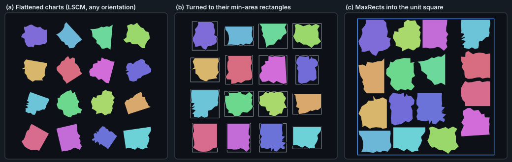
3.12Isometric texture coordinates
A generated atlas (§3.11) is conformal, so its triangles have the right angles only up to the conformal map's local scale, and their areas vary across a chart. For uses that need every triangle in UV to be the same shape and size as on the surface (texture-space simulation, measuring lengths in UV), each level's atlas is then made isometric per triangle: every triangle gets its own three UVs, similar to its 3D triangle, and the triangles of a chart are arranged to fit together as closely as their shapes allow. This runs after the atlases, by default, for meshes without input UVs; a mesh's own texture coordinates are never changed. The UVs are kept in double precision and rounded to float for the .mlod, whose vertices are split per distinct UV (§3.13).
1. Isometric triangles. Let p0, p1, p2 be a triangle's atlas UVs with centroid cp, and q0, q1, q2 its 3D triangle laid flat (same edge lengths) with centroid cq. The triangle is placed at
uk = cp + s R(θ) (qk − cq), θ = ∠(q0 − cq, p0 − cp), s = √(Σchart Aatlas / Σchart A3D)
with one scale s for the whole chart, so the chart keeps its atlas area. Every triangle now has its 3D angles and its 3D area times s², the same factor across the chart: the map is isometric up to the chart's scale and exactly area-proportional, and neither changes again (step 2 only moves and turns triangles, step 3 scales whole charts). Neighbours no longer meet: they leave gaps where the conformal atlas was stretched and overlap where it was compressed.
2. Rigid-body simulation. Every triangle f of a chart is a rigid body with a centroid cf, an angle θf, a velocity vf and a spin ωf; its corner k, at rf,k from the centroid after step 1, is at xf,k = cf + R(θf) rf,k, so its shape and size never change. Its mass is its UV area over the chart's mean, mf = Af / Ā, and its moment of inertia about the centroid If = mf Σk ‖rf,k‖² / 12. Two kinds of interaction act on the bodies.
Springs join the corners that were one vertex of the chart (that shared an atlas location): for a vertex whose N corners are all paired, each pair a, b of triangles A, B has weight w = 1/(N − 1), so every corner's springs weigh 1 in all, and pulls corner a with
Fa = κ w min(mA, mB) (xb − xa), Fb = −Fa
with the torque (xa − cA) × Fa on A (the lighter body's mass keeps a small triangle from being flung about). Repulsion acts on every pair of the chart's triangles whose interiors overlap. Whether they do (touching is not overlapping) and the polygon where they do come from Geometric Tools' 2D triangle–triangle queries [9], ported into the tool: a separating axis test on the six edge normals, and one triangle clipped by the other's three edges. n is the edge normal along which their projections overlap least (pointing from A to B) and d that overlap, and the impulse acts at P, the centroid of the overlap polygon, with rA = P − cA, rB = P − cB:
vrel = (vB + ωB × rB) − (vA + ωA × rA), j = max(0, (−(1 + e) vrel·n + β d/Δt) / (mA−1 + mB−1 + (rA × n)² IA−1 + (rB × n)² IB−1))
and J = j n is applied as −J on A and +J on B (2D cross products are scalars, ω × r = ω(−ry, rx)). The Baumgarte term β d/Δt is the separating velocity that removes the share β = 0.5 of the overlap per step; the restitution e is 0.
Each step first computes every spring force and torque and every impulse from the state at its start, and only then applies them, so the result does not depend on the order of the pairs:
v ← (1 − γ)(v + m−1(F Δt + J)), ω ← (1 − γ)(ω + I−1(τ Δt + Σ r × J)), c ← c + v Δt, θ ← θ + ω Δt
with Δt = 1 and damping γ = 0.1; velocities carry over from step to step. The simulation runs in two phases. First the springs alone, at κ = 0.05, for 400 steps (--uv-relax-steps), close the gaps; the repulsion is off here because the placement overlaps heavily where the atlas was compressed, and pushing those triangles apart before the springs had arranged them scattered them. Then the repulsion is on and the springs are weak, κ = 0.001, for at most 400 more steps, until no two triangles of the chart overlap by more than half a texel of a 4096² texture. The springs must be weak against the repulsion: a curved chart's gaps are about a hundred times that tolerance, and at κ = 0.01 the springs balanced the impulses while pairs still overlapped. Charts are simulated in parallel (OpenMP), each on its own; --no-uv-repulsion skips the repulsion.
3. Fit into the atlas. Finally each chart is turned, scaled uniformly and moved into the box its atlas chart occupied: of the eight turns φ = kπ/8, the one allowing the largest scale min(W/w(φ), H/h(φ)) is kept (W×H the atlas box, w(φ)×h(φ) the turned chart's box, measured on its convex hull), and the chart is centred in the box. Charts therefore never overlap each other, and a uniform scale changes no angle or area ratio (--no-uv-fit skips it).
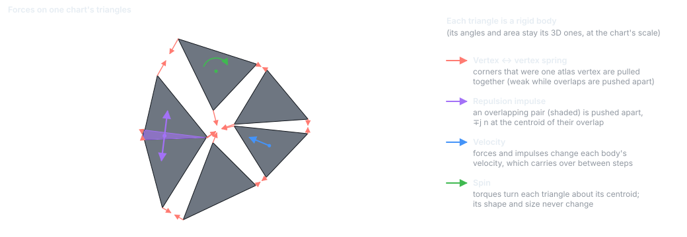
Usage. Isometric UVs are on by default for meshes without texture coordinates:
meshlet-optimizer model.ply -o model.mlod # isometric UVs (default)
meshlet-optimizer model.ply -o model.mlod --no-isometric-uvs # keep the packed LSCM atlases
meshlet-optimizer model.ply -o model.mlod --uv-relax-steps 800 # let the springs run longer
meshlet-optimizer model.ply -o model.mlod --no-uv-repulsion --no-uv-fit
meshlet-optimizer model.ply -o model.mlod --save-levels levels # every level as a PLY with its UVs3.13Export to the meshlet DAG
MlodWriter maps the hierarchy onto meshlet-viewer's DAG:
- Every level's surface goes into one vertex buffer; the index buffer is level 0.
- Each region of each level is exactly one meshlet. Only a region beyond 256 vertices or 256 triangles is split, into the fewest edge-connected parts of about equal size.
- A group at DAG depth k is the set of level-k regions that merge into one level-(k+1) region; its coarse bounds and error are that parent's. Split halves count as one parent. The top level forms terminal groups (ecoarse = ∞).
- A region's error is the larger of its children's errors and an approximate two-sided Hausdorff distance between its remeshed surface and its children's, measured at vertices, so errors grow monotonically; bounding spheres are merged upward the same way.
- The selection BVH is built with meshoptimizer's
clodBuildHierarchy, 8 wide, one tree per depth, exactly as the viewer builds it for its own hierarchies. Per-triangle edge masks mark meshlet perimeter edges for the viewer's outline rendering.
Since swapping a group for its parent replaces exactly the faces inside the group's outer border, and that border is nested, any cut the renderer selects is crack-free.
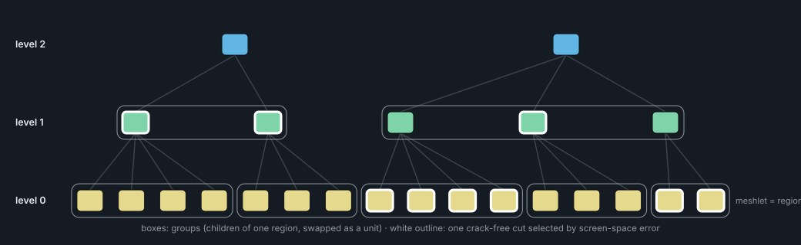
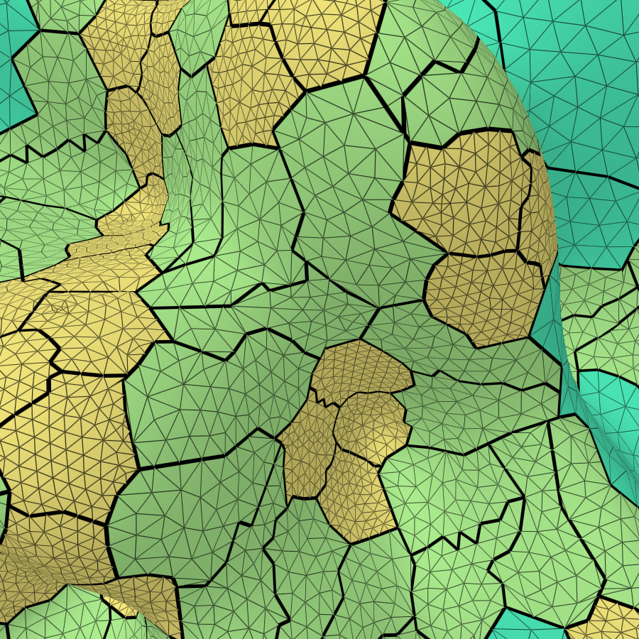
.mlod in meshlet-viewer with automatic LOD selection (camera close, --lod-error 8): meshlets of three DAG levels, colored by level (lighter is finer), are drawn side by side. Black lines are meshlet outlines; meshlets of different levels meet along common borders, with no cracks.4Results
4.1Setup
All runs use the default parameters (Appendix B) on an AMD Ryzen AI 9 365 (10 cores, 20 threads), Windows 11, MSVC 19.44 with /O2 and /openmp:llvm. Two models are used: the metasphere (66,264 vertices, 132,524 triangles, no UVs), the regression test of the repository, and cosplay, a textured photogrammetry figure (299,788 vertices, 599,642 triangles, a 4096² texture with 273 UV islands and 24,915 seam edges).
4.2Level structure
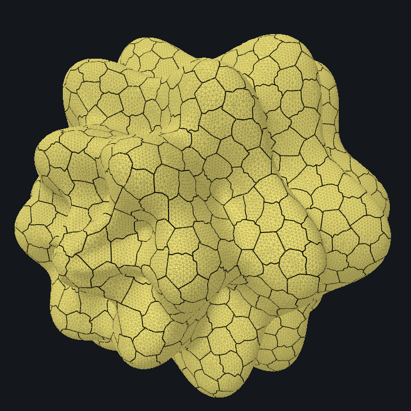
level 0 · 1,138 meshlets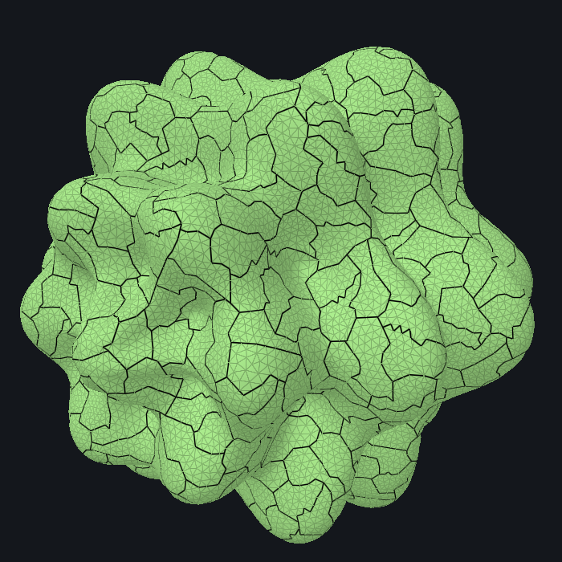
level 1 · 735 meshlets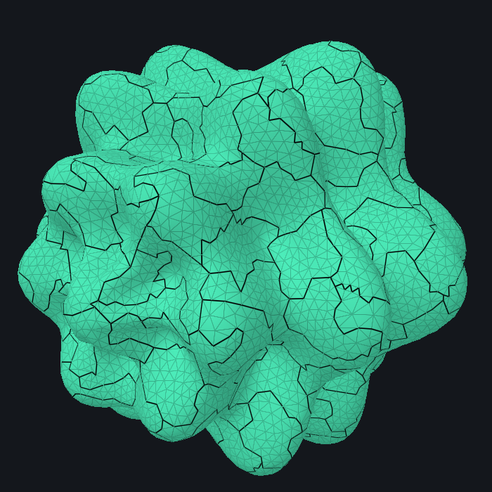
level 2 · 258 meshlets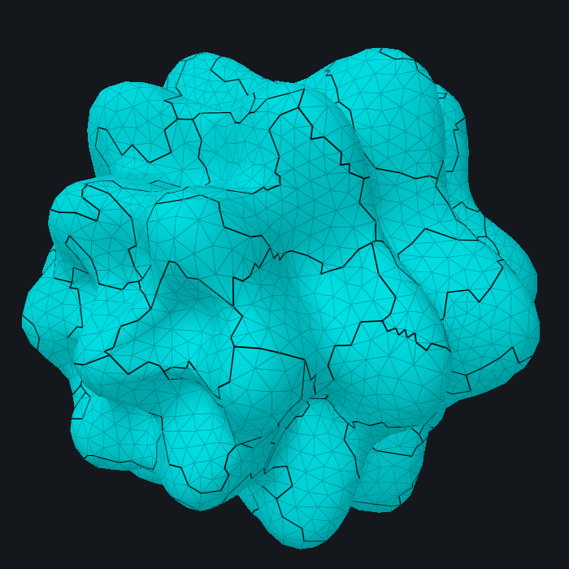
level 3 · 111 meshlets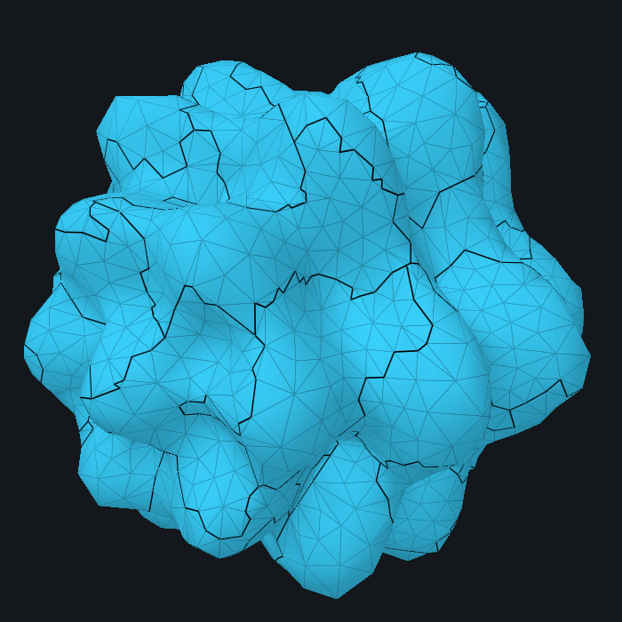
level 4 · 56 meshlets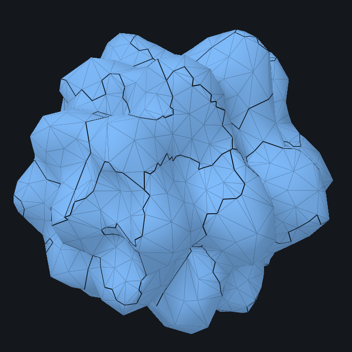
level 5 · 34 meshlets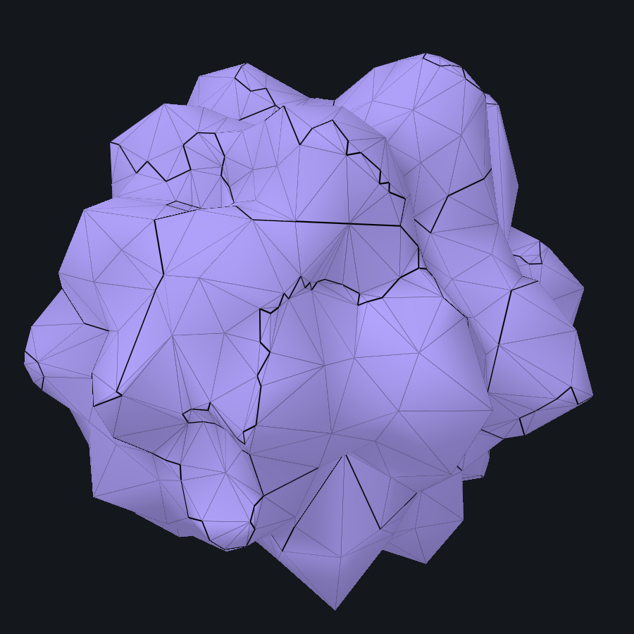
level 6 · 22 meshlets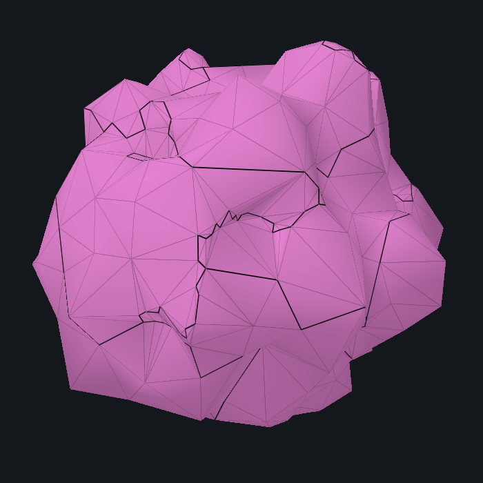
level 7 · 13 meshlets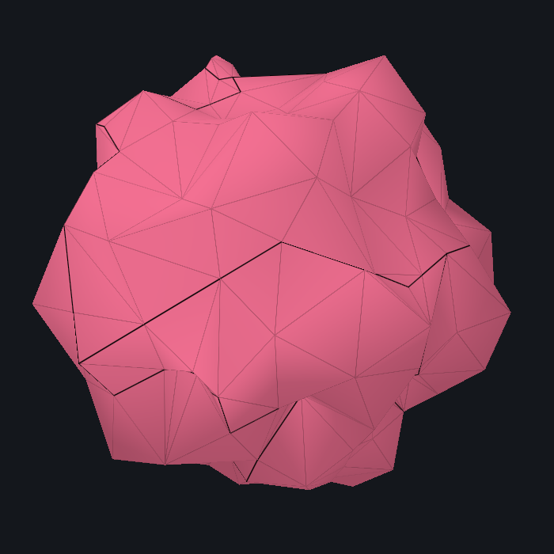
level 8 · 8 meshlets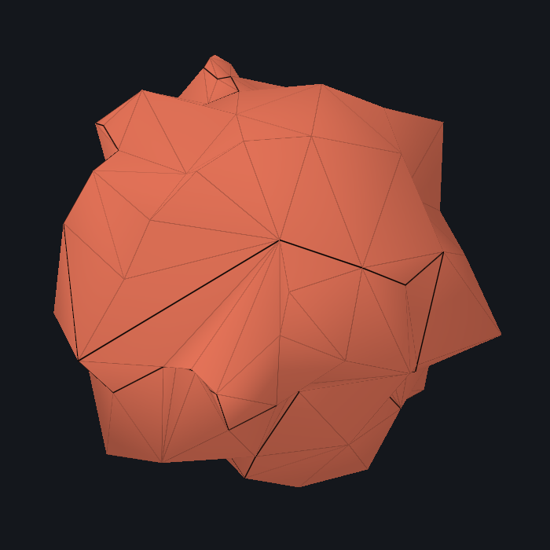
level 9 · 4 meshlets.mlod in meshlet-viewer at every fixed DAG level, 0 through 9 (--lod-level), as the viewer draws it: every meshlet of a level in that level's color (lighter is finer), meshlet outlines in black, triangle wireframe in thin lines. One region is one meshlet. Borders coarsen along with the interiors, and every border is drawn along borders of the finer levels.| Level | Vertices | Triangles | Regions | Triangles / region |
|---|---|---|---|---|
| 0 | 66,264 | 132,524 | 1,138 | 116.5 |
| 1 | 24,896 | 49,788 | 735 | 67.7 |
| 2 | 10,165 | 20,326 | 258 | 78.8 |
| 3 | 4,490 | 8,976 | 111 | 80.9 |
| 4 | 2,338 | 4,672 | 56 | 83.4 |
| 5 | 1,364 | 2,724 | 34 | 80.1 |
| 6 | 871 | 1,738 | 22 | 79.0 |
| 7 | 533 | 1,062 | 13 | 81.7 |
| 8 | 298 | 592 | 8 | 74.0 |
| 9 | 175 | 346 | 4 | 86.5 |
The metasphere gives 10 levels, 2,379 meshlets in 823 groups and 222,748 triangles over all levels, 1.68× the input. After level 1 every level has 40–45% of the triangles of the one below, and regions settle at about 80 triangles, a third of the meshlet limit: the split threshold keeps them from growing, and border simplification keeps the border share of each region roughly constant. Level 1 has smaller regions than level 0 because the many merges that exceed 256 triangles are split in two.
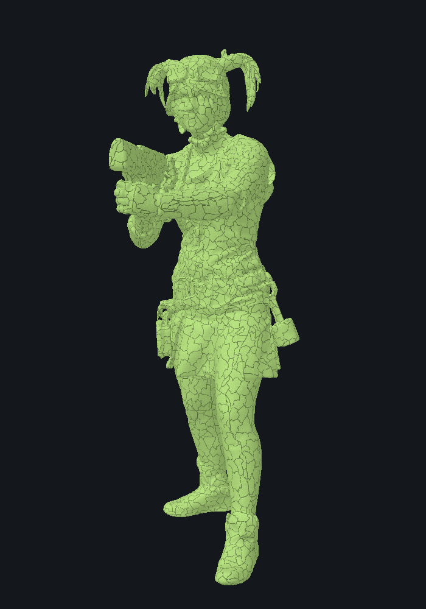
level 1 · 3,914 regions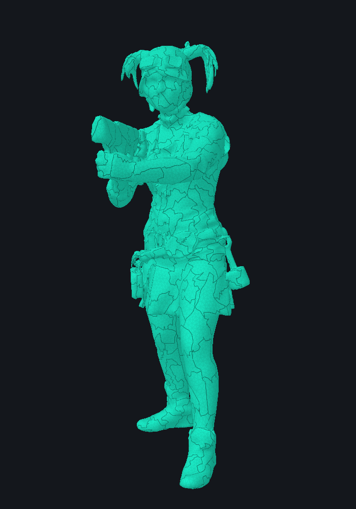
level 3 · 705 regions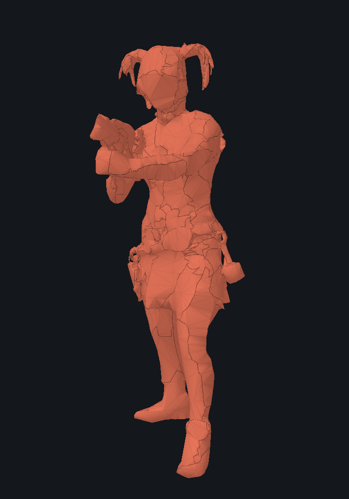
level 12 · 299 regions.mlod in meshlet-viewer at fixed DAG levels 1, 3, 5 and 12, each in its level's color with meshlet outlines. Regions never cross UV seams, so small texture islands (buttons, straps, eyes) remain separate meshlets up to the top level.| Level | Vertices | Triangles | Regions | Triangles / region |
|---|---|---|---|---|
| 0 | 299,816 | 599,698 | 10,441 | 57.4 |
| 1 | 117,711 | 235,488 | 3,914 | 60.2 |
| 2 | 49,753 | 99,572 | 1,490 | 66.8 |
| 3 | 22,966 | 45,998 | 705 | 65.2 |
| 4 | 12,389 | 24,844 | 449 | 55.3 |
| 5 | 7,942 | 15,950 | 353 | 45.2 |
| 6 | 6,292 | 12,650 | 319 | 39.7 |
| 7 | 5,677 | 11,420 | 302 | 37.8 |
Cosplay gives 13 levels, 19,469 meshlets in 7,996 groups and 1,100,946 triangles over all levels. The first five levels shrink like the metasphere's. Afterwards the region count stalls at 299: the model has 273 UV islands, and once an island is a single region it has no neighbour it may merge with. Levels 9 to 12 are nearly identical and the loop stops only at --max-depth. This is the price of exact UV preservation (§5).
4.3Running time
| Stage | Metasphere | Cosplay |
|---|---|---|
| Base charts (RCVT, regularization, seams) | 2.45 | 15.37 |
| Level loop (all levels) | 3.35 | 27.02 |
| Flat triangles | 0.38 | 5.72 |
| Border relaxation | 14.69 | 92.49 |
| UV atlases | 1.85 | — |
| Write .mlod | 0.33 | 2.03 |
| Total | 23.1 | 143.4 |
The border relaxation dominates: it optimizes every border vertex of every level jointly, and most of its time is spent inside LBFGSpp's bound-constrained line search rather than in the energy and gradient evaluation, which are parallel. The level loop itself is fast because each level is a fraction of the one below; level 1 alone accounts for half of it on the metasphere and a third on cosplay. Earlier versions of the pipeline took about 70 s on the metasphere; the factored LSCM solve (15 s → 1.7 s) and an analytic relaxation gradient (53 s → 15 s) account for most of the difference.
4.4Texture fidelity
Measuring UV accuracy on a coarse level needs care. Comparing a triangle's UV with the UV of the nearest point on the input fails on thin parts (fingers, straps, cloth edges), where the nearest point of a coarse triangle can lie on a different island, and gave spurious errors of thousands of texels. We instead measure in the direction the renderer uses the data: for every output triangle, take the UV at its centroid, find the input triangle that contains that UV (choosing the nearest in 3D when the atlas reuses texture area), map it to its 3D point, and report the distance dtex from the triangle's centroid to that point. It is compared with the geometric error dgeo, the centroid's distance to the input surface. Distances are in input mean edge lengths (3.40 units). A triangle is counted as mismatched when dtex > dgeo + 4.
| Level | dgeo p50 | dgeo p99 | dtex p50 | dtex p99 | Mismatched | Off-chart |
|---|---|---|---|---|---|---|
| 0 | 0.01 | 0.19 | 0.02 | 0.34 | 1 | 0.00% |
| 1 | 0.04 | 0.34 | 0.07 | 0.45 | 2 | 0.00% |
| 2 | 0.07 | 0.55 | 0.11 | 0.68 | 1 | 0.01% |
| 3 | 0.13 | 0.88 | 0.16 | 1.14 | 1 | 0.03% |
| 4 | 0.20 | 1.34 | 0.26 | 1.87 | 1 | 0.05% |
| 5 | 0.26 | 1.93 | 0.34 | 2.85 | 5 (0.03%) | 0.10% |
| 6 | 0.29 | 2.44 | 0.38 | 3.70 | 14 (0.11%) | 0.17% |
| 7 | 0.29 | 3.02 | 0.39 | 4.39 | 20 (0.18%) | 0.19% |
The texture error tracks the geometric error at every level, at 1.2–1.8× in the tails (99th percentiles): coarse triangles sample the texture where their surface used to be, and the extra error comes from interpolating UVs linearly across triangles that are now much larger than the input's. The handful of mismatched triangles at levels 0–2 were 15, 11 and 4 before the slit-seam handling of §3.11; the remaining ones at coarse levels sit on parts of the surface that the coarse level approximates poorly (geometric error of several edges). Assigning input UVs to the snapped interior vertices instead of interpolated ones was tried and changed the 99th percentiles by less than 0.03 edge lengths, so the interpolated UVs are kept.
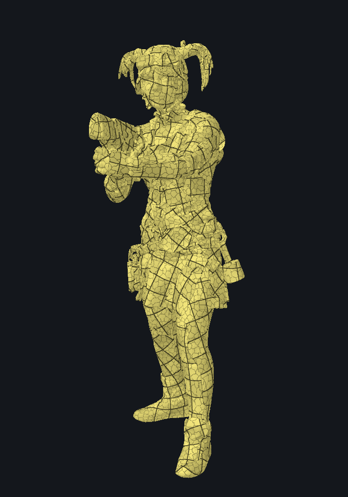
level 0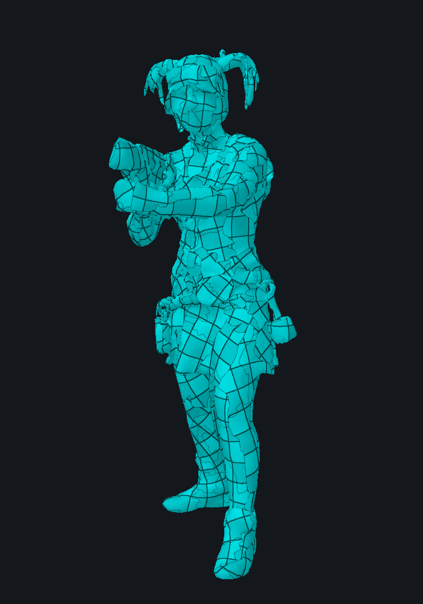
level 4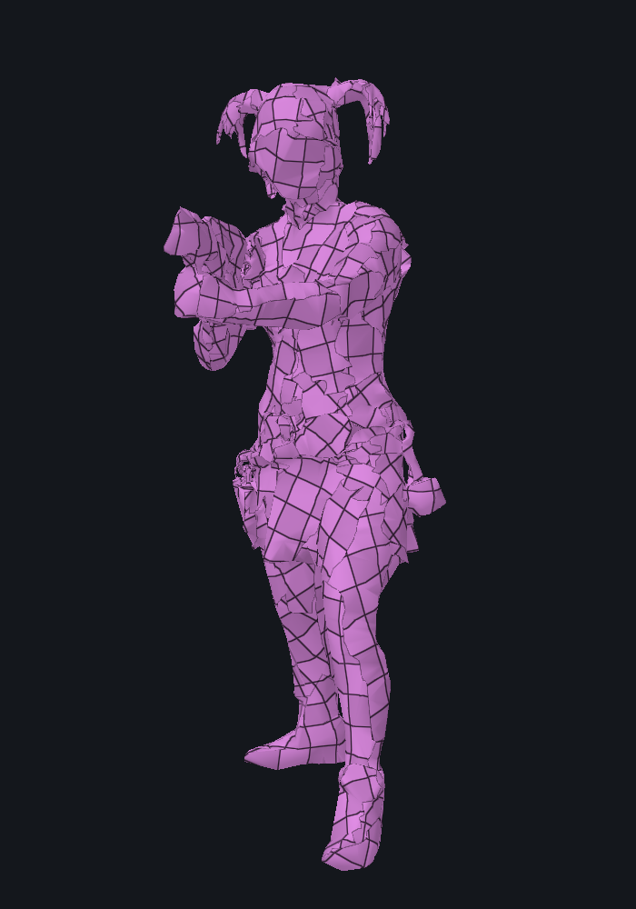
level 9--uv-grid) at levels 0, 4 and 9. The grid follows the input atlas on every level: it stays continuous across meshlets inside each UV island and breaks only at the input's texture seams, which are region borders.4.5Generated atlases
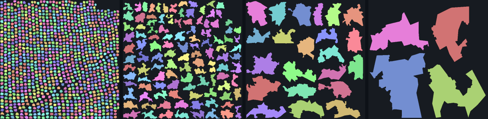
Every atlas was rasterized at 1024² and checked: all UVs lie in [0, 1]², the ratio of UV area to 3D area is identical for every chart of a level (min/median = max/median = 1.000), and no pixel is covered by two charts. Coverage falls from 62% at level 0, where many similar small charts pack tightly, to 40–45% for the few large, irregular charts of coarse levels. The two coarsest levels each contain one triangle folded by LSCM (level 9: 254 pixels of self-overlap within one chart), a limitation of flattening very large curved regions conformally.
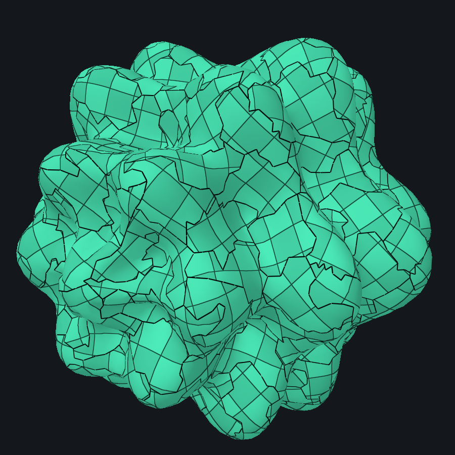
4.6Isometric texture coordinates
The isometric UVs of §3.12 are shown on the coarsest level of a unit icosphere (20,480 triangles, five clustering passes, default parameters): level 5 has 372 triangles in five charts, large and strongly curved, which is the hardest case for flattening a chart with undistorted triangles. Figure 16 shows the level's charts before (the packed LSCM atlas) and after (isometric triangles after the rigid-body simulation, fitted back into their atlas boxes); Table 5 compares them.
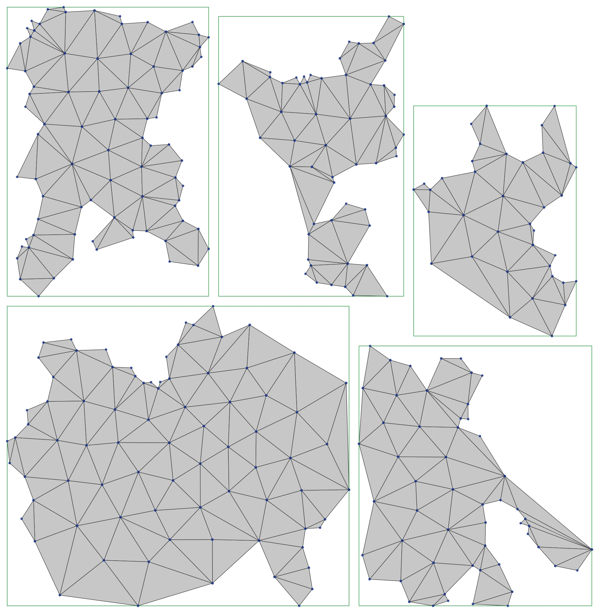
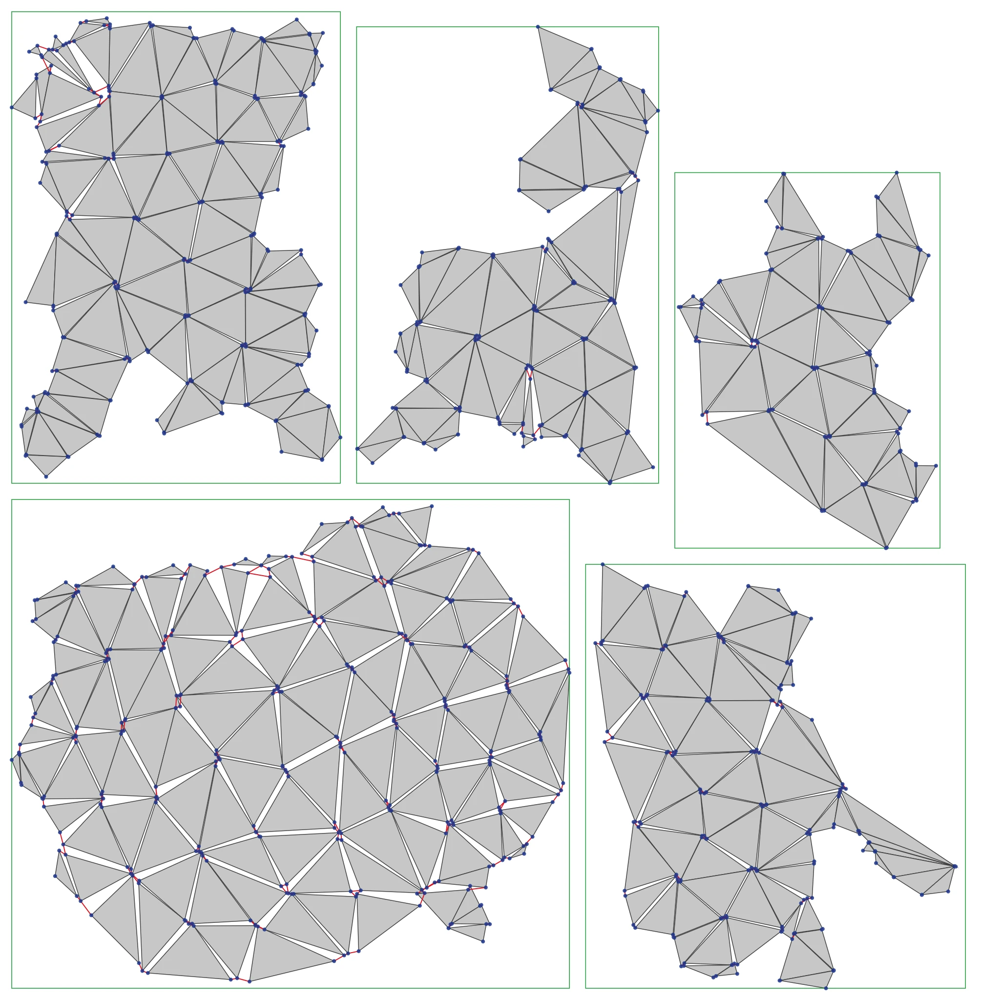
| LSCM atlas | Isometric | |
|---|---|---|
| Triangles / charts | 372 / 5 | 372 / 5 |
| Worst angle error | 0.21 rad (12°) | 9 × 10−8 rad |
| Flipped triangles | 0 | 0 |
| Overlapping pairs (over one texel at 4096²) | 0 | 0 |
| Deepest overlap (texels at 4096²) | 0 | 0.50 |
| Overlaps across charts | 0 | 0 |
| Area ratio, min–max | 0.57–2.63 | 1.00–1.00 |
| Gap between corresponding corners, mean / max | 0 / 0 | 0.0036 / 0.023 |
Every triangle's angles now match its 3D triangle to 10−7 rad, against up to 12° in the conformal atlas, and no triangle is flipped. Its area is exactly its chart's multiple of its 3D area (an area ratio of 1.00 everywhere, against 0.57–2.63 in the atlas), because the triangles never change size after step 1. No two triangles overlap by more than half a texel of a 4096² texture, where the simulation stops. The price is gaps: around the interior vertices of these charts the 3D angles sum to noticeably less than 2π, so rigid triangles cannot all meet, and the shortfall is left as thin slits along shared edges (mean gap 0.0036 in the unit square, about 15 texels at 4096²). Finer charts are flatter, and the gaps shrink with them: on the same mesh the mean gap is 0.0011 at level 4 and 6 × 10−6 at level 0 (20,480 triangles), and no level has a pair overlapping by more than a texel. A chart this curved is better split than flattened; the hierarchy splits regions by triangle count only (§3.8), not by curvature.
4.7Validation
The repository's test (ctest) builds the metasphere with --check --check-cracks: it fails unless the .mlod is written, has at least two levels and no pair of levels violates the nesting invariant. All 45 level pairs pass. The written file is read back with meshlet-viewer's own loader for both format versions, and the cosplay output was checked the same way. Output is deterministic: repeated runs write byte-identical metasphere files apart from the stored build time.
5Limitations
- UV islands bound the coarsest level. Regions never cross a seam, so a textured model cannot get coarser than one region per island (299 regions on cosplay). Merging across seams would need texture-space resampling (baking) of the merged region.
- Border relaxation cost. The joint optimization over all levels takes almost two thirds of the running time (64% on both models); a per-level or block-coordinate scheme would parallelize better.
- Conformal folds. LSCM can fold large curved regions. The remeshing stage detects folds and falls back to 3D decimation, and the atlas stage keeps the fold (one triangle on the coarsest metasphere levels). A bijective parametrization would remove both.
- Storage. Every level stores its own vertices and triangles (1.68× the input's triangles over all levels on the metasphere, 1.84× on cosplay), and nested borders keep collinear border vertices on finer levels that a single-level simplifier would remove.
- Atlases per level. Generated atlases are independent per level, so a texture must be baked for each level that is drawn.
6Conclusion
meshlet-optimizer builds meshlet LOD hierarchies whose clusters are designed rather than left over: compact CVT charts at the bottom, clique-merged and remeshed regions above, one meshlet per region. Keeping region borders nested across levels, by snapping every dropped border vertex onto the coarser border on all finer levels, makes any cut through the DAG crack-free while still letting borders coarsen, and a joint relaxation over all levels evens them out. Treating UV seams as borders carries texture coordinates through every level with errors that follow the geometric error, and untextured meshes get packed per-level atlases. The output is a standard cluster-LOD DAG that an existing mesh-shader viewer renders unchanged.
References
- B. Karis, R. Stubbe, G. Wihlidal. Nanite: A Deep Dive. SIGGRAPH Advances in Real-Time Rendering in Games, 2021.
- A. Kapoulkine. meshoptimizer, including
demo/clusterlod.h. github.com/zeux/meshoptimizer. - B. Lévy, S. Petitjean, N. Ray, J. Maillot. Least Squares Conformal Maps for Automatic Texture Atlas Generation. ACM Transactions on Graphics 21(3), SIGGRAPH 2002.
- D.-M. Yan, B. Lévy, Y. Liu, F. Sun, W. Wang. Isotropic Remeshing with Fast and Exact Computation of Restricted Voronoi Diagram. Computer Graphics Forum 28(5), SGP 2009.
- S. Lloyd. Least Squares Quantization in PCM. IEEE Transactions on Information Theory 28(2), 1982.
- Y. Liu, W. Wang, B. Lévy, F. Sun, D.-M. Yan, L. Lu, C. Yang. On Centroidal Voronoi Tessellation — Energy Smoothness and Fast Computation. ACM Transactions on Graphics 28(4), 2009.
- J. Jylänki. A Thousand Ways to Pack the Bin — A Practical Approach to Two-Dimensional Rectangle Bin Packing. 2010.
- P. V. Sander, J. Snyder, S. J. Gortler, H. Hoppe. Texture Mapping Progressive Meshes. SIGGRAPH 2001.
- D. Eberly. Geometric Tools,
IntrTriangle2Triangle2.h, and The Method of Separating Axes. geometrictools.com.
Appendices
ABuilding and running
Dependencies are pinned git submodules under external/: Eigen 3.4, cereal, fmt, happly, argparse, CDT, LBFGSpp, meshoptimizer and kdtree-cpp. OpenMP is on by default (MOPT_OPENMP); on macOS it uses Homebrew's libomp when installed.
git clone --recursive https://github.com/rgb2hsv/meshlet-optimizer.git
cd meshlet-optimizer
cmake --preset vs2026 # or vs2022, or ninja (macOS / Linux / developer prompt)
cmake --build --preset vs2026 --config Release
ctest --test-dir build-vs2026 -C Releasemeshlet-optimizer assets/model/metasphere.ply -o metasphere.mlod
meshlet-optimizer assets/model/cosplay.ply -o cosplay.mlod --save-levels levels/
meshlets cosplay.mlod # meshlet-viewerThe tool prints one line per stage with its duration, then a summary of levels, meshlets, groups, vertices and triangles. --save-levels DIR also writes every level as DIR/level_k.ply with per-corner UVs and an integer region per face, which is what the figures of this page are made from.
BParameters
| Option | Default | Effect |
|---|---|---|
--chart-triangles | 256 | Largest base chart, in triangles touching it; sets the seed count (§3.3). |
--cvt-chunk | 256 | Triangles per parallel work item of the restricted Voronoi diagram; sums are taken chunk by chunk in order, so results do not depend on the thread count but do (by rounding) on this size. |
--chart-fill | 0.375 | Share of --chart-triangles each base chart aims at: the seed count is ⌈|F| / (fill · --chart-triangles)⌉ (§3.3). |
--cvt-lloyd / --cvt-lbfgs | 4 / 40 | Lloyd warm-up and L-BFGS iterations of the base CVT. |
--min-chart-vertices | 16 | Smaller charts merge into a neighbour. |
--no-regularize | Skip opening, region competition and disk splitting. | |
--max-clique | 4 | Most regions merged into one per level (§3.5). |
--stop-at-regions / --max-depth | 2 / 12 | Stop when the top level is this small, or after this many levels. |
--max-hole-fraction | 0.5 | Largest hole filled to keep a group a disk. |
--no-straighten-seams | Keep the base charts' CVT borders (§3.4). | |
--lscm-padding | 1 | Rings of neighbour triangles flattened with each region (§3.6). |
--lscm-iterations | 1024 | Conjugate-gradient iterations if the LSCM factorization fails. |
--interior-fraction | 0.35 | Interior vertices kept per region and level (§3.7). |
--resample-lloyd | 10 | Lloyd iterations of each region's 2D CVT. |
--split-above-faces | 256 | Split remeshed regions with more triangles (§3.8). |
--border-target-scale | 1 | Border edge target in mean interior edge lengths (§3.9). |
--border-max-normal-change | 60° | Largest triangle turn a border collapse may cause. |
--flat-min-angle | 1° | Caps with a smaller angle are flipped or split (§3.10). |
--border-lloyd-iterations | 200 | L-BFGS-B iterations of the border relaxation. |
--pack-padding | 0.02 | Space around each chart in a generated atlas (§3.11). |
--no-isometric-uvs | Keep the packed LSCM atlases (§3.12). | |
--uv-relax-steps | 400 | Rigid-body steps in which springs pull the isometric UV triangles together. |
--no-uv-repulsion | Skip the repulsion that pushes overlapping UV triangles apart. | |
--no-uv-fit | Do not turn and scale each chart into its atlas box. | |
--no-project | Keep resampled vertices off the input surface. | |
--check / --check-cracks | Fail unless written; verify the nesting invariant for all level pairs. | |
--save-levels DIR | Write every level as a PLY with UVs and regions. | |
-j, --threads | all | OpenMP threads. |
CThe .mlod format
A .mlod file is a cereal portable binary archive, readable on either endianness: an endianness byte, the magic "MLOD" and a version, then the fields below in order. Arrays are a 64-bit count followed by raw 32-bit words (8-bit for byte arrays). Version 1 has no texture coordinates; version 2, written whenever the levels have UVs, adds one per vertex right after the vertices.
| Field | Type | Content |
|---|---|---|
| settings | scalars | Meshlet builder settings; for meshlet-optimizer files, the largest meshlet written. |
| vertices | Vertex[] (24 B) | Position and normal of every vertex of every level. |
| texcoords | vec2[] | Version 2 only: one UV per vertex. |
| indices | uint32[] | Level 0 triangles; bounds, center, radius, mean edge length. |
| meshlets | meshopt_Meshlet[] | Vertex/triangle offsets and counts, one per region (part). |
| meshlet vertices / triangles | uint32[] / uint8[] | Local-to-global vertex map; 3 local indices per triangle. |
| bounds | MeshletBounds[] | Bounding sphere and normal cone per meshlet. |
| lods | MeshletLod[] (48 B) | Self and coarse error spheres and errors, DAG depth. |
| edge masks | uint8[] | Per triangle: which edges are on the meshlet perimeter. |
| statistics | scalars | Build time, triangle counts per level, clusters per level. |
| LOD BVH | LodNode[], LodGroupRange[] | Selection BVH over groups, roots, node counts per depth. |
DSource layout
| Directory | Contents |
|---|---|
src/app | Command line (Options) and main. |
src/core | Eigen type aliases, Expects/Fail, triangle geometry, line search, mutable heap. |
src/mesh | Mesh, PLY reader and writer, MeshDecimation, MeshProjector. |
src/charts | CvtSegmentation, LabelRegularization (§3.3). |
src/flattening | ChartLayout, Mosaic, LSCM (ChartFlattening), ChartBinPack. |
src/hierarchy | MeshletBuilder (all stages in order), RegionHierarchy, DiskGroups, SeamStraightening, RegionResampling, RegionSplit, BorderSimplification, LevelCracks. |
src/mlod | MlodWriter: levels to meshlet DAG and BVH. |
docs/figures | Figure scripts for this page (Python standard library only). |
EReproducing the figures
Every figure is generated by a script in docs/figures that needs nothing beyond the Python standard library. The step diagrams (Figures 2–9) run simplified planar versions of the tool's algorithms on a small Delaunay mesh (make_diagrams.py). The UV atlases are drawn from --save-levels output with a small rasterizer and a zlib PNG writer (plyfig.py, make_atlas.py). The rigid-body diagram (Figure 8) is drawn by make_isometric.py diagram, which with levels also draws and checks saved levels before and after the isometric step; the two panels of Figure 16 were rendered offscreen with NanoVG from the icosphere's levels. Every rendering of the meshes is a meshlet-viewer screenshot of the .mlod files themselves, taken with its --screenshot option (make_viewer_shots.py).
meshlet-optimizer assets/model/metasphere.ply -o metasphere.mlod --save-levels levels/metasphere
meshlet-optimizer assets/model/cosplay.ply -o cosplay.mlod
cd docs/figures
python make_atlas.py ../../levels/metasphere metasphere-atlases.png --levels 0 3 6 9 --size 300
python make_diagrams.py
python make_viewer_shots.py path/to/meshlets metasphere.mlod cosplay.mlod